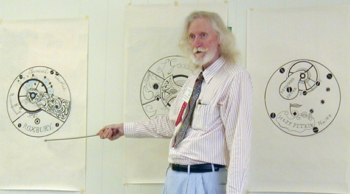
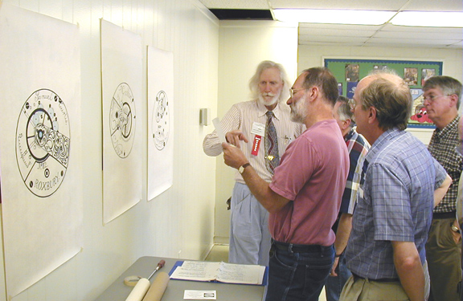

American Watch Making – 1809 to the Civil War
This is an archived report. Meeting places, times and people have changed since it was written. See Meetings for current details.
Our regular second Sunday meeting at the San Leandro Boys and Girls Club began with the usual lively and well attended Mart, with nearly 60 tables packed with a profusion of horological treasures. The extensive Silent Auction, ably hosted (for the past twenty years) by Seth Finkelstein, ended with a whistle, signaling the beginning of the Membership meeting. After Chapter President Frank Keillor oversaw a brief and concise business meeting, he turned the floor over to Larry Bernard for the afternoon’s program.

Larry’s program is entitled “Early American Watch Production: Products, Personalities and Progress toward Mass Production – 1809 to the Civil War.” Lacking examples of Goddards, Pitkins, and pre-1855 Walthams, Larry created large drawings of these movements to illustrate his talk. We learned about the Jefferson Embargo that stimulated itinerant preacher Luther Goddard, in Shrewsbury , Massachusetts , to produce a large number of traditional English style verge watches popular at the time. This enterprise ceased when imports resumed and Reverend Goddard could not price his product competitively.
The next enterprise by the Pitkin brothers, Henry and James, in Hartford , Connecticut , in the late 1830’s, was an effort to use mass production methods, developed nearby in the Springfield Armory and clock factories, to manufacture a watch. This watch was a unique design of Henry Pitkin’s and featured screws as pivot holes, which were thought for many years to be conical recesses to hold conical steel pivots as in many alarm clocks.

However, when Larry traveled to England on the 1993 Henry B. Fried Horological Tour, participants were treated to a display of drawings on this very watch, expertly presented by the artist David Penny. Mr. Penny, one of the finest horological illustrators of our time, had disassembled the movement and discovered cylindrical pivots, with rounded ends, in cylindrical holes, with flat ends. In discussion with the artist after the show, Larry had found that Mr. Penny planned to publish these findings, along with his excellent drawings, in the NAWCC Bulletin.
When this did not appear, Larry had corresponded with Mr. Penney who graciously granted permission to enhance Larry’s presentation, and everyone’s knowledge, by using drawings of these pivots, supplied by Mr. Penney. This was of great interest to all who attended Larry’s presentation, and most everyone came up afterwards to have a closer look. We all eagerly anticipate Mr. Penney’s article, which he hopes to soon finish and send to the Bulletin, and we thank him for his generosity in sharing this valuable information with us.
The American Watch Company, as it came to be called, in Waltham , Massachusetts , was the last maker before the Civil War. Although bankrupt in 1857, this company had managed, at last, (the Pitkin had failed ten years before) to manufacture watches using factory mass production methods, with many parts interchangeable. This was due to the industry of Aaron Dennison and Edward Howard. A drawing of a Samuel Curtis movement rounded off the presentation. We all went home knowing a lot more about early American watch manufacture and the efforts to achieve mass production with interchangeable parts than we had known before.